돌솥비빔밥
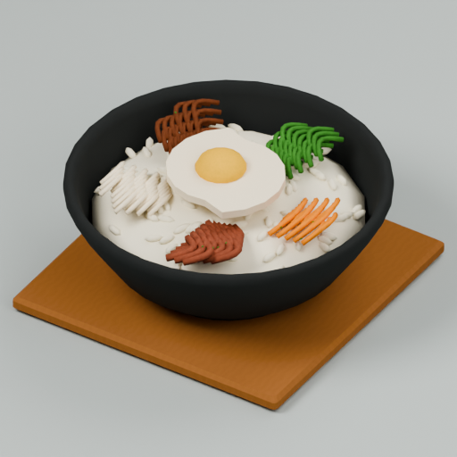
이번 수정 전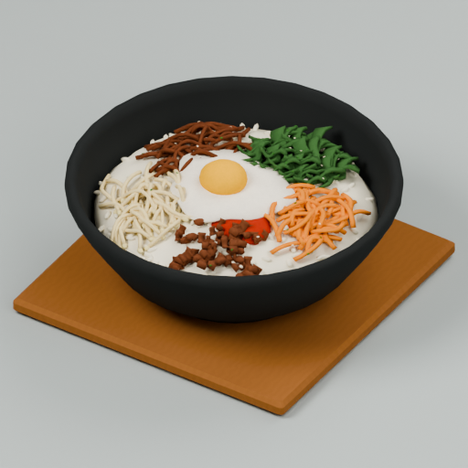
수정 후재료별 비정형 나물과 잘게 썬 고기를 낮게 겹치고, 얇은 계란 흰자와 둥근 노른자로 수정
GLB · FBX · 측면 · 후면
계란찜
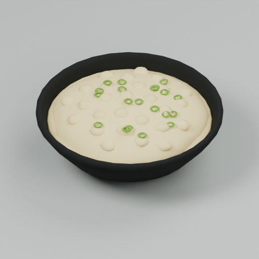
이번 수정 전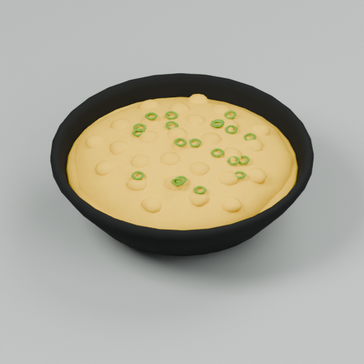
수정 후계란찜 전용 따뜻한 노란 재질로 변경하여 다른 음식의 공용 달걀 색 보존
GLB · FBX · 측면 · 후면
해물파전
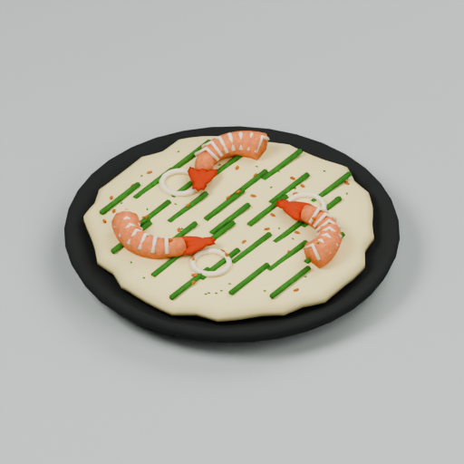
이번 수정 전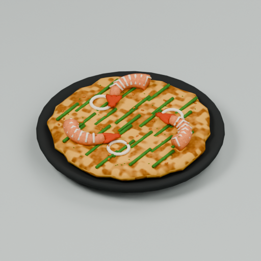
수정 후황금빛 반죽, 갈색 가장자리와 불규칙한 구운 얼룩을 전용 텍스처로 적용
GLB · FBX · 측면 · 후면
연어초밥
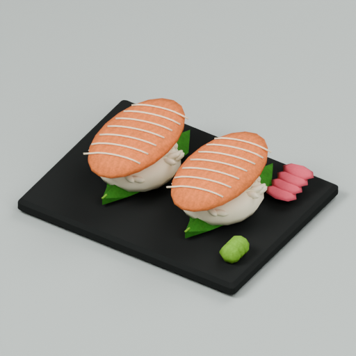
이번 수정 전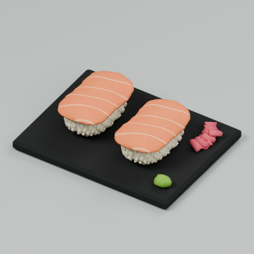
수정 후길쭉한 밥알 표면, 밥을 감싸는 얇은 연어 곡면, 표면에 통합된 지방결로 수정
GLB · FBX · 측면 · 후면
참치초밥
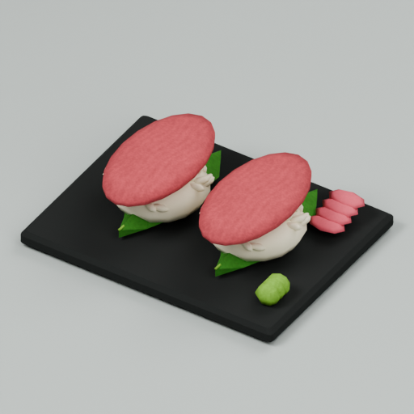
이번 수정 전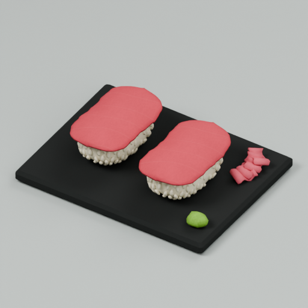
수정 후밥알이 드러나는 타원형 샤리와 가장자리가 내려오는 얇은 참치, 은은한 살결로 수정
GLB · FBX · 측면 · 후면
새우초밥
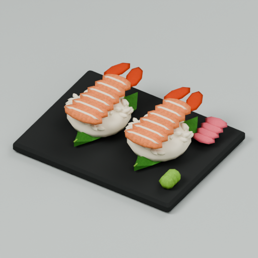
이번 수정 전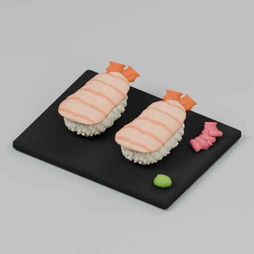
수정 후연속된 새우살 곡면, 마디와 색 변화, 얇게 갈라지는 꼬리로 수정
GLB · FBX · 측면 · 후면
계란초밥
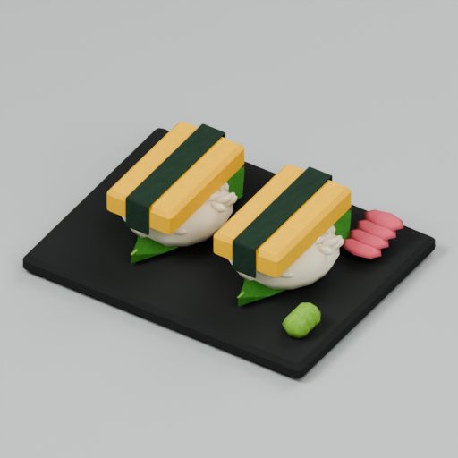
이번 수정 전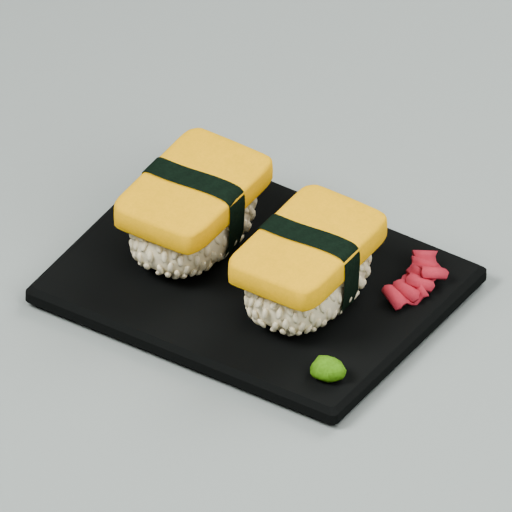
수정 후밥알이 드러나는 샤리, 부드러운 계란말이 모서리, 표면을 따라 감싸는 김띠로 수정
GLB · FBX · 측면 · 후면